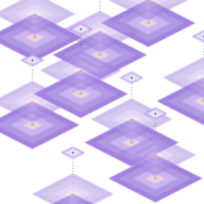

01
02
03
04
Step 1
오늘 하루는 어땠나요?
홍길동 님의 감정과 가장 유사한 감정 카드를 선택해주세요.
-
마음이 좀
복잡했어요
-
짜증나는 일이
많았어요 -
뭐가 뭔지
모르겠어요 -
설레는 일이
있었어요 -
답답하고
불안했어요
Step 2
왜 그렇게 느꼈나요?
감정의 원인을 선택해주세요.
-

자존감이
낮아졌어요 -

울고
싶었어요 -

기대한 일이
무산됐어요 -
혼자 있는
느낌이 강했어요
Step 3
홍길동 님의 슬픔 정도를 알려주세요.
현재 감정의 강도를 아래 조절 바를 통해 선택해주세요.
0
25
50
75
100

Step 4
케어 방향을 선택해주세요.
홍길동 님의 감정과 가장 유사한 감정 카드를 선택해주세요.
-
감정 증폭

지금 느끼는 감정을 더 깊고 풍부하게
경험할 수 있도록 도와드릴게요. -
감정 완화

지나치게 강한 감정을 부드럽게 다듬어
편안하게 만들어드릴게요. -
감정 전환
지금의 감정을 자연스럽게 전환해,
새로운 감정으로 안내해드릴게요.
MoodRx가 열심히 처방 중입니다.
1